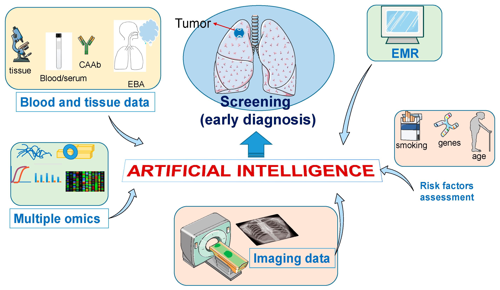
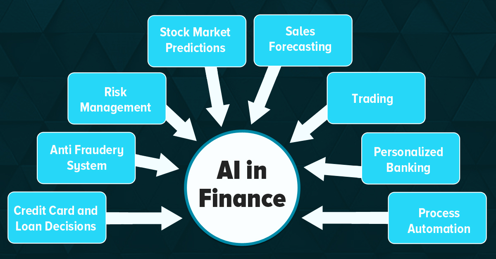
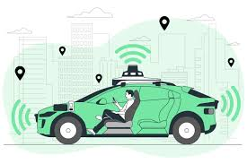

Advantages of AI
Listed below are some advantages of Artificial Intelligence
Healthcare.
AI is being used to revolutionize healthcare in a number of ways. For example,
- AI-powered systems are being used to analyze medical images such as X-rays and MRIs to detect diseases such as cancer at an early stage, I myself am working in developing a system to detect benign and malignant cancers.
- AI can analyze a patient's unique medical history, genetic data, and lifestyle factors to create personalized treatment plans and predict how they might respond to different medications.
You can learn more about AI in healthcare applications here: AI in Health Care: Applications, Benefits, and Examples
Finance.
AI is being used in the financial sector to detect fraud, manage risk, and provide investment advice
- AI can be used to analyze customer transactions to identify patterns that may be indicative of fraud
- AI can also be used to develop investment strategies that take into account a variety of factors, such as stock market conditions and the customer's risk tolerance. [How much risk a customer is willing to take in the market]
Transportation.

AI is being used to develop self-driving cars, which have the potential to revolutionize
transportation. Self-driving cars use a variety of sensors, such as cameras and radar,
to
perceive their surroundings. AI algorithms and neural networks use this information to make
human-like predictions for the car.
To learn more about self driving cars: https://en.wikipedia.org/wiki/Self-driving_car